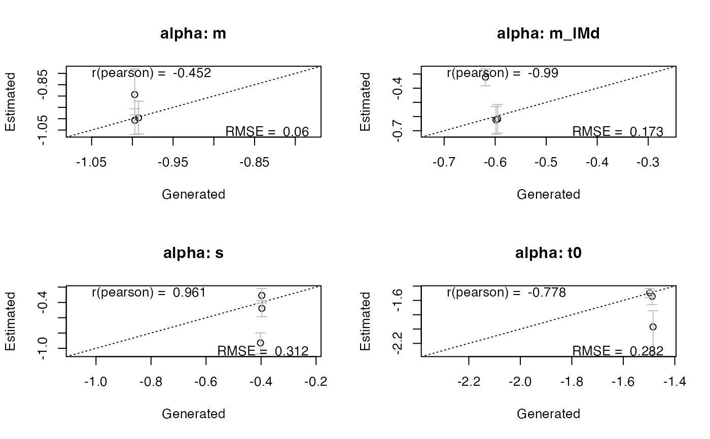
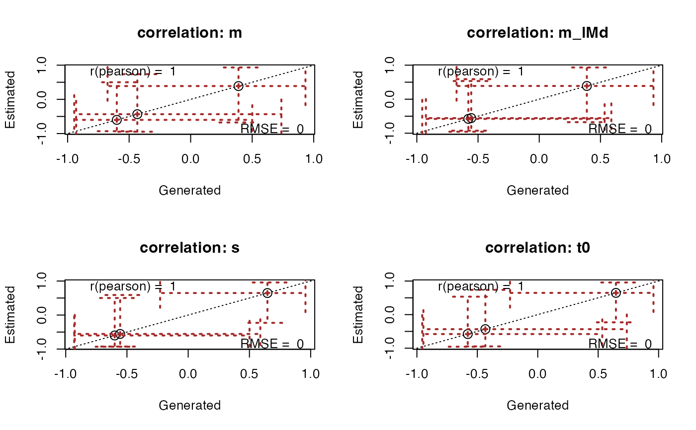

recovery.RdPlots recovery of data generating parameters/samples.
Full range of samples manipulations described in get_pars
# S3 method for class 'emc'
recovery(
emc,
true_pars,
selection = "mu",
layout = NA,
do_CI = TRUE,
correlation = "pearson",
stat = "rmse",
digits = 3,
CI = 0.95,
ci_plot_args = list(),
...
)
recovery(emc, ...)An emc object
A vector of data-generating parameters or an emc object with data-generating samples
A Character vector. Indicates which parameter types to plot (e.g., alpha, mu, sigma2, correlation).
A vector indicating which layout to use as in par(mfrow = layout). If NA, will automatically generate an appropriate layout.
Boolean. If TRUE will also include bars representing the credible intervals
Character. Which correlation to include in the plot. Options are either pearson or spearman
Character. Which statistic to include in the plot. Options are either rmse or coverage
Integer. How many digits to round the statistic and correlation in the plot to
Numeric. The size of the credible intervals. Default is .95 (95%).
A list. Optional additional arguments to be passed to plot.default for the plotting of the credible intervals (see par())
Optional arguments that can be passed to get_pars or plot.default (see par())
Invisible list with RMSE, coverage, and Pearson and Spearman correlations.
# Make up some values that resemble posterior samples
# Normally this would be true values that were used to simulate the data
# Make up some values that resemble posterior samples
# Normally this would be true values that were used to simulate the data
pmat <- matrix(rnorm(12, mean = c(-1, -.6, -.4, -1.5), sd = .01), ncol = 4, byrow = TRUE)
# Conventionally this would be created before one makes data with true values
recovery(samples_LNR, pmat, correlation = "pearson", stat = "rmse", selection = "alpha")

# Similarly we can plot recovery of other parameters with a set of true samples
true_samples <- samples_LNR # Normally this would be data-generating samples
recovery(samples_LNR, true_samples, correlation = "pearson", stat = "rmse",
selection = "correlation", cex = 1.5,
ci_plot_args = list(lty = 3, length = .2, lwd = 2, col = "brown"))
